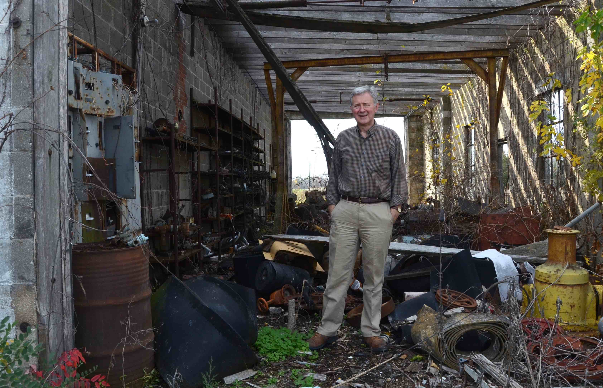

KBIA-FM (NPR Affiliate)
I joined Columbia’s NPR affiliate (KBIA-FM) in the fall of 2011 as a reporter. One year later, I also began working as a morning newscaster. In my last few months of reporting, I spoke to family members of an Iraqi-born man convicted of violating federal trade sanctions, a closeted LGBT mid-Missourian about rural health care and the mayor of a town with zero people about population shifts.
My reporting has earned several first place awards, including the nationwide Hearst Journalism Awards program, and a regional Edward R. Murrow Award.
Rural, Mo. town a ‘ghost of a past settlement’
(Feb. 13, 2013)
Goss stands as one of the smallest towns in Missouri. While driving by, you might miss it if it weren’t for a few green road signs marking the town’s location along Route 24 in Monroe County. If you stopped in Goss to ask for directions – you’re most likely out of luck because, well, nobody lives here. At least that’s what the 2010 U.S. Census reported. ( Read web story here )
MU Professor Brian Dabson stands in a tattered workshop of the defunct Joe Gilliam Mining Company, which used to mine clay.

Jim Rives’ former school house in Goss, Mo. was converted into a home years ago.

Although Goss, Mo., has zero residents, my cell phone’s weather app recognized it as a valid location.
Is sensitivity to chemicals a medical illness?
Debbie Lose-Kelly, a born again Christian, stands outside of Concord Baptist Church in Jefferson City on October 28, 2012.
Debbie Lose-Kelly says she spends her entire life in avoidance of the everyday chemicals like fragrances, shampoos or laundry detergents. She lives with severe Multiple Chemical Sensitivity — an illness that most in the medical community aren’t convinced is an actual disease. (Read web story here)
Numerous health problems disproportionately impact LGBT Missourians
(Oct. 11, 2012)
A wealth of factors are leading to poorer health outcomes within Missouri’s LGBT community. An August 2012 Missouri Foundation for Health report found these poor health outcomes are a result of differences in access to health care, an absence of medical settings that are affirming and free of discrimination, a scarcity of medical staff trained in LGBT health issues and social and economic systems that have not supported and protected minorities. (Read web story here)
What does your VFW have in common with your local church?
(May 17, 2012)
Commander Don Briggs chats with Ray Williams, a Vietnam War Veteran, at the Boone County VFW at a weekly dinner on April 24, 2013.
As part of Project573, I worked with a team of other journalists to explore the rising number of Americans who don’t affiliate with one religion in particular. While church attendance is declining, I explored other institutions, such as the Veterans of Foreign Wars post, which fill similar roles as a church . (Read web story here)
Morning Newscasts
I served as a morning news anchor from August 2012 – April, 2013. I produced three newscasts, uploaded content and copy edited stories for use on the station’s website all without editor supervision.
Nov. 5, 2012
Oct. 31, 2012